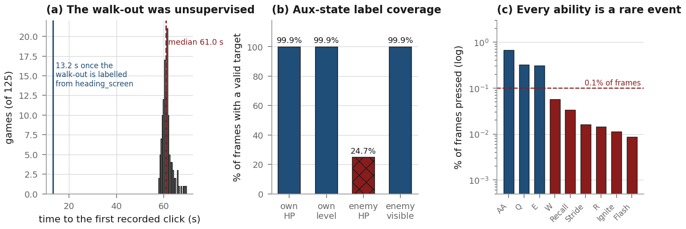

The corpus is 146 labelled in-client replays of Masters+ Garen top-lane games
(/srv/nfs/datasets/lol_replays_16_9_772), of which 125 have v7 latents and are the
BC training set: 3,554,768 frames = 49.4 game-hours at 20 fps. Frames are rendered HUD-disabled
at 352×352, squished from 1280×720 with the aspect destroyed (a 3.64× horizontal
downsample).
Labels come from a memory-scanning recorder that reads the League client’s heap at
50 Hz. What it captures, per frame, for all ten champions: world position, HP, HP max, level,
gold_total, and (for the focus champion) cursor, camera and click stream. What it
does not capture, verified: minion positions or HP, turret HP, ward state, XP,
cooldowns, objective timers. So there is no wave state, no true CS count, no denies. Wave
management — the thing that actually separates Emerald from Gold — is out of reach
without new extraction. That is a hard constraint on what any reward can express, and it is
worth stating plainly before any of the modelling discussion.

_parse_movement_clicks defaults the movement target to (0.5, 0.5) with
movement_event=False, and the champion is camera-locked to screen centre, so that
label reads “your move order is your own feet”. 153,351 frames = 4.31% of the corpus,
and they are the only fountain and base frames in the dataset. Backfilling from
heading_screen (already present in labels.json, previously unread)
recovers the true walk direction to 11.5° and pulls the median unsupervised window down to
13.2 s. (b) The auxiliary state head has four targets; the third, enemy HP, is valid on
only 24.7% of frames. (c) Every ability is rarer than 1% of frames; R fires on 0.014%.
The documented fix for this — --ability-pos-weight 5.0 — is the parser
default, and every production launcher passed 1.0.The HUD. The replay corpus is rendered HUD-off; live games have a HUD. Masking a HUD
over the frame moves the v7 latents by 2.6–5.2× a normal frame-to-frame step
(cosine 0.89–0.92) across six games — so the model is genuinely off-distribution for
an entire live game. Re-encoding clean frames reproduces the stored latents to 1e−11, so
those deltas are the perturbation and not encoder noise. But the same perturbation shifts the
commanded direction by only 8.2°, and the lane stays TOP in 5–6 of 6 games. The
HUD is a real shift and it is not the cause of the walking failure. The cheapest close is to mask
the HUD to black before encode_frame; the mask already exists at
sim_replay.py:96 and was never wired into the live path.
The frozen action embedding was fitted to a different target. The Phase-1 checkpoint
predates the movement_source flag, so action_embed['movement'] was
trained on the legacy per-frame cursor position. Phase 2 feeds it the click target.
Measured on one game, the two share a 21-bin cell on only 40.0% of frames, and the click
target is clamped to 0.0/1.0 where the cursor target never leaves the interior. The embedding is
excluded from the trainable prefixes, so it cannot adapt. Every frozen-backbone run since is
feeding an embedding out-of-distribution values on every frame.
Late in this work Dani pointed out that the agent teleports the pointer straight to each click target, which is not what a human does no matter what the loss says. That is an input-realism argument, and it turns out the two quantities are completely different objects:
| channel | exact repeat, frame to frame | median step | p90 step |
|---|---|---|---|
| cursor (observation only) | 28.5% | 0.0039 | 0.0226 |
| movement (conditioning INPUT) | 85.2% | 0.0000 | 0.0156 |
They differ by more than 0.05 screen units on 34.3% of frames, so one channel cannot represent
both. The cursor channel is now threaded into the dataset (schema 6) and a regression head sits
behind --cursor-weight, default 0. It is not a substitute for the walk-out
label fix: measured over three games’ walk-out windows, two of three have literally zero
cursor variance, because pipeline.py sets cursor_world = cast_target
when casting and last_click_world otherwise — so the cursor inherits the same
~60 s gap as the click stream. I claimed it might cover the walk-out before measuring it. It does
not.
“Garen doesn’t even make it into top lane.” In the replay corpus the human walks top in essentially 100% of games from 0:15–0:45. Live, the agent walked into bot lane.
That sentence hides a conjunction of about ten conditions — form a representation of the screen; recover which map region you are in; recover which side you are playing; map that to a direction; decide that now is a moment to issue a command; express the direction as a screen point; sample it without the noise destroying it; convert to a pointer position; right-click; have the game read the click as a move order. Nine of them can be individually correct while the agent still walks bot, and each fails with a different observable signature. The first document written about this enumerated 100 hypotheses with a distinguishing prediction and a falsifying test for each, precisely because the symptom does not localise on its own.
What made it tractable was that the failure had a signature no plumbing bug produces: the direction was a property of the random seed, not of the pixels. Across 40 closed-loop games, under the deployed configuration, the lane the agent chose was at chance across sampling seeds (28% same lane, chance 34.6%, agreement R = 0.299), and each individual game locked onto one arbitrary direction and held it (directional concentration R = 0.643 / 0.739). Cut the action channel and the preference becomes deterministic in the pixels: 100% same lane across seeds, agreement R = 1.000, median direction change 0.2°.
This section is the useful part of the report. Four confident conclusions were published inside this project and then retracted after measurement, and one recurring failure mode caused most of them. A reader should come away knowing which numbers to trust and why.
“The 146M stack matches a no-pixel lookup table to 0.008 nats.” The original measurement was 1,800 teacher-forced frames over 3 held-out games, scored against a count table fitted on 5 games: model 4.365 nats vs table 4.357. On 13,627 event rows over 6 held-out games, against a table fitted on 24 training games, the head is 0.099 nats better than the table (4.050 vs 4.123), paired t = −2.31 (5 df), negative in 5 of 6 games. The head is not literally a lookup table. It is marginally above one. The dramatic version of the sentence was an artifact of scoring a 1,800-frame subset against a 5-game table.
“Event-frame categorical CE must fall clearly below 4.357 nats.” A 24-game count table scores 4.123 and the shipped checkpoint scores 4.050. The bar as written passes the broken model. On the 6-game split the two are 4.1214 (blind) and 4.1212 (deployed) — two ten-thousandths of a nat apart, which is the version of the number that should be quoted. Any future bar has to be stated against a table fitted on the training corpus and read on the same split it will be judged on.
“The signal is ABSENT from the features; the bottleneck is perception.” This one cancelled a planned training program. It came from nested probes that fitted their readout on five games. Refitting the identical feature on 30 games more than doubles the effect (−0.052 → −0.126 nats) and takes the ablated feature past the deployed head (−0.095). A separate, from-scratch replication sharing no code found 0.31 bits of next-click direction in a single frozen latent. “A 5-game probe found nothing” and “the information is not there” are different statements, and only the first was ever measured.
“--movement-gate causes the NaN.” Three commits over two days
attribute a training divergence to three different flags in turn
(--movement-gate + --unfreeze-backbone, then unfreezing without the
video loss, then --train-action-embed). Each attribution was made from a run short
enough that the divergence had not yet appeared in the other arms. The A/B eventually ran the
deployed configuration precisely because it was the only one that trained clean, and the
mechanism is still not isolated.
“Interpolating the movement target makes copying harder.” Interpolating the
held target between clicks does make it change every frame, so the naive
“at+1 == at” rate collapses. But the interpolated
value at t is a function of the next click, so the targets become self-predictive:
the blind-table bar drops from 4.12 to 1.73 nats. The A/B arms that used it
(R2, R3) are therefore not comparable to the arms that did not, and
that is visible in the logs as two different bars printed on the same page. The same technique
applied to the cursor channel is safe, because that channel is an observation and never an
action-conditioning input. Same operation, opposite consequence, decided entirely by what
consumes the array.
Five of the defects in this project were guarded by a test, and the test passed. In every case the test was satisfied by the very failure it was meant to catch.
| the check | why the bug passes it |
|---|---|
| The Phase-3 smoke test perturbs the policy head off zero-init “so the prior KL and movement logits are non-degenerate” | It perturbs the dead head 0 too, so prior@0 is no longer uniform and the KL comes
out at 1.9e−3 instead of 7.29. The test noticed the degeneracy and worked around it in the
test instead of in the trainer. |
| Both preflights assert a positive gradient norm on the sum over all MTP heads | The sum is positive whenever any offset trains. A per-offset assertion fails on head 0 at step 1. |
scan_offsets.py accepts a gold_current memory offset if it sits
in a plausible range |
A field that never moves passes that test. The sibling offset gold_earned is
required to change between two snapshots and is correct; gold_current is a
per-hero constant — Garen −3.77e22, Vladimir 1.46e31, Fiora 0.0 — on 130 of 130
hero-games audited. |
| The direction acceptance metric scores against a measured permutation null | A blind copier clears that null by 26 sigma. §8. |
ab_checkpoints.cell_acc, the checkpoint comparison script |
Scores the n=1 output against frame f’s own target, so ~99% of scored
frames have target NO_OP; and its denominator sits inside if gate, making it
|agent fired AND human fired| rather than |human fired| — so checkpoints with different
firing rates are not comparable, which defeats the script’s entire purpose. |
There is a general shape here. A test that asserts “this quantity is non-degenerate” is weaker than a test that asserts “this quantity has the value it must have”, and a test written after the fact by someone looking at a failing assertion will tend to relax into the first form. The one place we got it right is worth naming: the movement-target round-trip tests plant distinguishable values and check exact inverses, and that entire area — bin encode/decode, joint encode/decode, twohot, latent folds, RoPE index spaces, KV-cache paths, camera projection — came back clean and has not needed re-auditing.